TG57: Pokémon screens a Desert Town player can still reach
Noam Peretz, 2026-10-29. Reachability was traced from the code: the new game starts on Map001's quick-start event, which runs the character select and then sends the player to demo-tent (Map081). From there 35 maps are reachable. The stock Pokémon maps 2-75 are not. Images below are copies of the files the game loads today. Spec: docs/specs/tg57-desert-screens.md.
Legend:stock Pokémonpartly themedalready Desert Townnot reachable, leave
Plan: PIL = recolour/redraw locally, free. GEN = new art through desert-town (needs your count). CODE = plugin or text change only.
The Desert Town look (taken from the game's own art)
The help slide (White button) and the world map slide (Green button) already set the UI style. Every themed screen copies it: an amber panel with a dark-brown frame and a light-gold inner line, cream text with a 1 px ink outline, a tent-red accent, and the Handjet font the game already uses. The palette is the 32-colour lock measured in docs/design/world-map-regen/brief.md.
frame amber #C08030frame dark #5C3010frame light #E8B860sand pale #F1CB8Asand #E0AD70wood #966D54tent red #CC2C2Fdeep red #9E2A34magenta #DB2964cream text #FFF8ECink #2A1608night #36304E
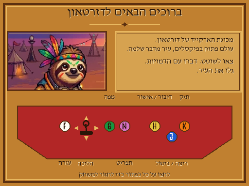
Style ref: help slide (already Desert Town)
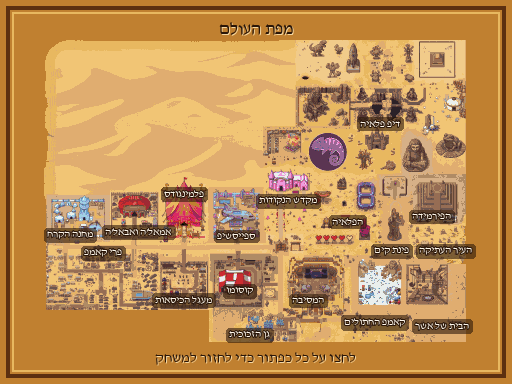
Style ref: world map slide (frame, labels)
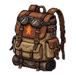
Style ref: the Bag's backpack icon (already replaced)
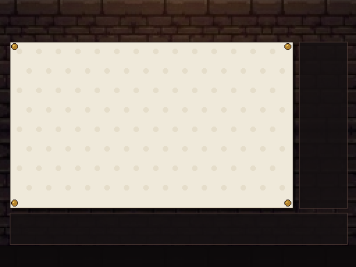
Style ref: temple board (parchment panel)
Priority 1: seen by every player
1. Boot: splash screens, title, Continue screen stock Pokémon
How it's reached: every time the game starts (not in debug mode): splash1, then splash2, then the title, then the Continue / New Game / Options / Quit Game list. Pokémon text: "Pokémon Essentials" splash, the POKéMON ESSENTIALS logo with Pikachu, "VERSION 21.1", "PRESS ENTER", the Poké Ball background, "Badges:" and "Pokédex:" on the Continue panel. The Continue list (Continue / New Game / Options / Quit Game) has no Hebrew. The map name on the panel is the internal English name (e.g. "deep-playa 1b"). Music now:Audio/BGM/Title.ogg, the stock Essentials title theme (76 s). It keeps playing on the Continue screen. Plan:GEN one title illustration (no text in the image) + PIL a code-drawn logo "דזרטאון / DESERT TOWN" and a Hebrew "press a button" line. Splash 1 becomes a Desert Town card. Splash 2 keeps the Essentials and mkxp-z credit, redrawn in the palette. PIL recolours the Continue panels purple to brown and replaces the Poké Ball background. CODE hides Badges and Pokédex and adds Hebrew labels and map names. Music:Deep Playa Psychedelic 2. It's a Desert Town track that no map uses yet.
How it's reached: every line of dialogue (the speech frame) and every Yes/No, choice list and pause menu (the menu frame). These are the two most-seen pieces of UI in the game. Files:Windowskins/speech hgss 1.png (speech frame 0) and Windowskins/choice 1.png (menu frame 0), both from HeartGold/SoulSilver. Also UI/pause_arrow.png and UI/sel_arrow.png (the grey arrows). Music: none (SE only: stock "GUI sel cursor/decision", which are neutral clicks. Keep them.) Plan:PIL redraw both 9-slice skins in place, under the same file names: a sand-pale fill, a dark-brown frame and a gold inner line. Old saves keep working with no code change. The fill stays light, so the current dark text keeps its contrast.
speech hgss 1.png (96x48, shown 3x)
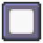
choice 1.png (48x48, shown 3x)
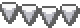
UI/pause_arrow.png (3x)UI/sel_arrow.png (3x)
3. Pause menu (Pink button) stock Pokémon
How it's reached: Pink (Z). It's the stock Essentials menu. The entries the player sees are: Bag, the player's name (Trainer Card), Save, Options and Quit Game. Pokédex, Pokégear and Town Map stay hidden because the player never gets them. "Pokémon" stays hidden because the party is empty outside the circus fight. Debug shows only in debug mode. Text: "Bag" is already Hebrew (תיק). "Save", "Options" and "Quit Game" are English. Plan:CODE Hebrew labels. The frame is fixed by item 2. Finding (not theming): "Quit Game" lets a cabinet player close the game. This is flagged, not changed. See the spec's open questions.
4. Bag (Orange button) partly themed
How it's reached: Orange (K) or B, and the pause menu. BurningManBag locks it to the Key Items pocket. Already done: the bag picture (backpack) and Hebrew item names. Still stock:UI/Bag/bg_8.png (the orange/white Gen-4 layout), icon_pocket.png (Poké Ball pocket icons; only the key-items one shows), cursor.png (red bar) and icon_slider.png. Plan:PIL recolour bg_8 to the parchment and amber frame, redraw the key-items pocket icon and the cursor in tent red on wood.
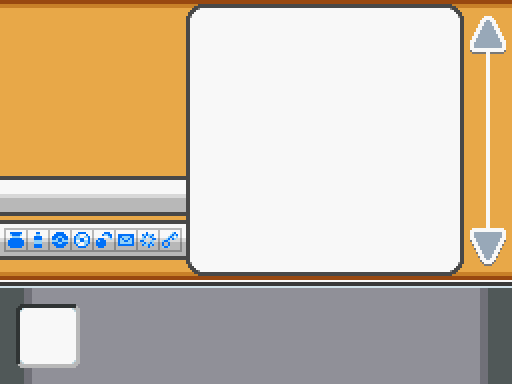
UI/Bag/bg_8.png
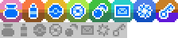
UI/Bag/icon_pocket.png (2x)
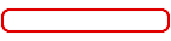
UI/Bag/cursor.png
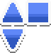
UI/Bag/icon_slider.png
5. Item-get jingle stock Pokémon
How it's reached: every reward. All Desert Town items are key items, so each one plays Audio/ME/Key item get.ogg (the 2.4 s Pokémon fanfare). Map events also play Item get and Key item get directly. Plan:PIL-equivalent, free cut a 2.5 s sting with a fade-out from a Desert Town track. The default source is the opening bar of Calm Camps Area. Python soundfile can read and write ogg on this laptop, so no new music is needed. The sting is saved under the same ME file names, so no event changes.
Priority 2: one step into the pause menu
6. Save screen stock Pokémon
How it's reached: pause menu, then Save. (Autosave is silent and has no screen.) Text: the English map name, "Player", "Time", "Badges 0", "Pokédex" (only if owned), "Would you like to save the game?", "{1} saved the game." The save plays the ME GUI save game (Pokémon jingle, 1.3 s). Plan:CODE Hebrew labels, the Hebrew area name, no Badges line. free reuse the new sting for the save ME. Frames come from item 2.
7. Options stock Pokémon
How it's reached: pause menu, then Options, and the Continue screen, then Options. Text: all English. Four rows are Pokémon-only: Battle Effects, Battle Style, Send to Boxes, Give Nicknames. Speech Frame and Menu Frame let a player switch the shared cabinet back to the HGSS frames. Plan:CODE keep Music Volume, SE Volume, Text Speed and Default Movement in Hebrew, and hide the other six rows.
8. Trainer Card (the player's name in the pause menu) stock Pokémon
Text: "TRAINER CARD" baked into the art, plus Poké Ball emblems, Name, ID No., Money $, Pokédex, Time, Started, and 8 badge slots. The trainer picture is blank (DESERTTOWNER.png is empty). Plan:PIL recolour the card to amber, erase the emblems and the badge row, and draw the header "כרטיס דזרטאון". CODE rows become Name, Play time, Started, and Game depth (the Inception counter that's already saved).
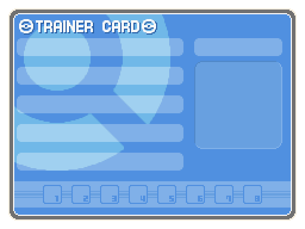
UI/Trainer Card/card.png
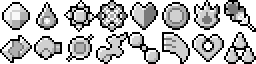
UI/Trainer Card/icon_badges.png
Priority 3: one place in the world
9. The circus fight (mom-dad-in, Map089): a full Pokémon battle partly themed
How it's reached: the referee on mom-dad-in. pbMomDadBattleStart lends Pikachu, Charizard and Snorlax and starts a trainer battle against the Team Rocket Grunt party (Blastoise, Venusaur…). Already done: the trainer sprites are hidden, the names are Hebrew ("מאמן הקרקס"), the money is 0, a loss sends the player home, and the battle messages are mostly Hebrew. Still stock: the Team Rocket "R" transition (it fires for any TEAMROCKET_M battle), the battleback (no BattleBack on Map089, so it falls back to indoor1), the battle message, command and fight boxes, the databoxes, and the Party and Summary screens if the player opens "Pokémon". The command menu shows "Pokémon" (פוקימון). Music now:Battle trainer.ogg and then Battle victory trainer.ogg (both stock). Plan:CODE while the circus fight runs, swap the R transition for a plain non-Poké Ball one, play War (the track the duels already use), and play Victory on a win. That's the Desert Town ME added 2026-10-20 that nothing plays yet. PIL recolour the battle boxes and databoxes, and draw a red/white tent-stripe battleback (or GEN one in the nicer count). PIL recolour Party and Summary to sand.
10. Duels (Dan on Piramid Map022 and the party Map093) partly themed
The stock Duel minigame uses only message windows, which inherit the new frames from item 2. The music is already War, and DesertTalk swaps in Desert Town moves and names. Still English: the event's end lines "You won, good job." and "You lost, too bad.", and the core lines "Choose a command.", "HP: {1}", "DEFEND" and so on, where the Desert Town move list doesn't cover them. CODE add Hebrew translations.
11. Leftover stock NPC: "Ruin Maniac" on deep-playa 6 (Map105, event 1 at 24,0) stock Pokémon
A visible trainer_GENTLEMAN sprite on the map's top edge. Talking to him shows English Essentials text, including the developer note "When using this mining minigame, it is recommended that you limit how often…". He opens the stock Mining minigame (UI/Mining/*), which gives Pokémon items (stones and fossils) the key-item-only Bag never shows. Whether a player can stand next to him wasn't checked (passability). Default: remove the event rather than theme it.
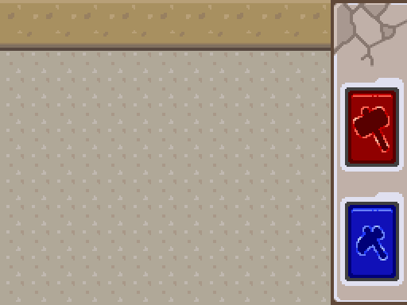
UI/Mining/bg.png
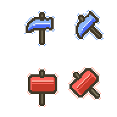
UI/Mining/tools.png
12. Window title stock Pokémon
"Pokémon Essentials v21.1" in mkxp.json (windowTitle) and Game.ini (Title). It shows on the laptop taskbar and window bar, not on the fullscreen cabinet. CODE change it to "Desert Town".
Already Desert Town (no work)
done Character select carousel (DesertCharSelect; dark fill and the map's Calm Camps Area). done Help slide (White) and world map slide (Green). done All the minigame scenes (temple boards, hoop, Tuta maze, arm wrestling, DJ Rush, wedding seating, stamp desk, eviction, Alla stand, planetarium, Kusomo TV, bags song). done All map music (Calm Camps Area, Deep Playa 3, Ice In, War, Time-Warp, Alien Party/Aliens, Flamingo Band stages).
Not reachable: leave as is
not reachable Pokédex, Pokégear, Town Map: never given (no has_pokedex, no has_pokegear, no TOWNMAP item).
Professor Oak intro, Controls help (ButtonEventScene) and the naming screen: Map001's Oak event is an action-button event at (0,0) that never runs, and the character select passes a name to pbTrainerName, so the keyboard never opens.
Poké Center, Mart, PC Storage, Game Corner, Hall of Fame, Credits, Battle Frontier, Safari: they live only on stock maps 2-75, which have no path from demo-tent.
Evolution and egg hatching: no eggs, and none of the lent Pokémon evolve by level.
Ready Menu: only the keyboard D key opens it, and no cabinet button does.
Mystery Gift: hidden unless unlocked.
Wild-battle music, surf and bicycle music: never triggered.
Batch 2 (TG59): boot and Bag, before and after
Labels: every "after" below is a real in-engine screen grab of Game.exe on the laptop (not mocked). Every "before" is the stock asset file from git (not an in-engine capture). Founder override (dec:tg-37): one ~1 s Desert Town splash that carries the Essentials and mkxp-z credit replaces the two stock splashes (measured 1.06 s in engine, was about 5.6 s). The title is a placeholder (darkened world map plus a code-drawn logo) until Batch 5.
After: Continue screen (engine grab; no Badges or Pokédex, Hebrew area name)
Before: Bag background (stock asset)
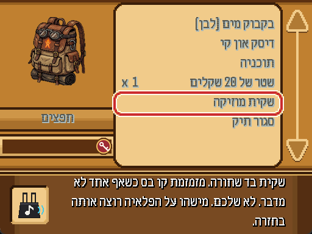
After: Bag (engine grab; new bg, key badge, cursor and slider)
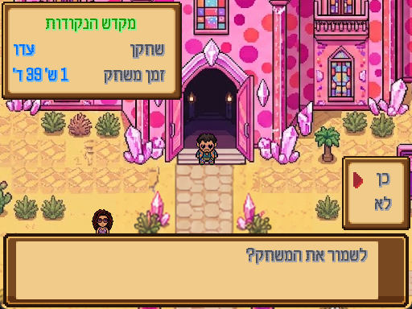
After: Save window with the Hebrew area name, Player and Time only (engine grab; saving was cancelled)
Batch 3 (TG61): Options and the card, before and after
Labels: the "after" card is a PIL composite of the real card.png with the card text drawn in the same positions as 004_card.rb (NOT an engine grab; no in-engine capture was run). The "before" is the stock asset file from git. Options has no picture: the row list below is read from the engine source (UI_Options.rb) and the plugin.
Before: Trainer Card (stock asset, text not drawn)
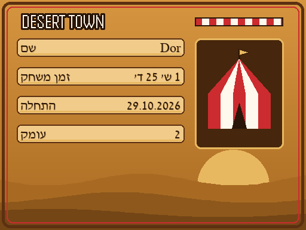
After: Desert Town card (composite: name, play time, started, depth; no Badges, Pokédex or Poké Ball)
Options row
Before
After
Music Volume, SE Volume, Text Speed, Default Movement, Text Entry, Screen Size
shown
shown (6 rows, Hebrew labels from Batch 1)
Battle Effects, Battle Style, Send to Boxes, Give Nicknames, Speech Frame, Menu Frame
shown
removed (MenuHandlers.remove)
Image generation count
Image
Minimal
Nicer
Title illustration, 512x384, no text (the logo is code-drawn)
1 + 1 retry
1 + 1 retry
Desert Town emblem for splash 1 and the Continue background
0 (code-drawn wordmark)
1 + 1 retry
Circus-tent battleback for Map089
0 (PIL stripes)
1 + 1 retry
Total, retries included
2
6
Everything else is PIL recolouring or code. No new music: every screen gets an existing Desert Town track or a sting cut from one.